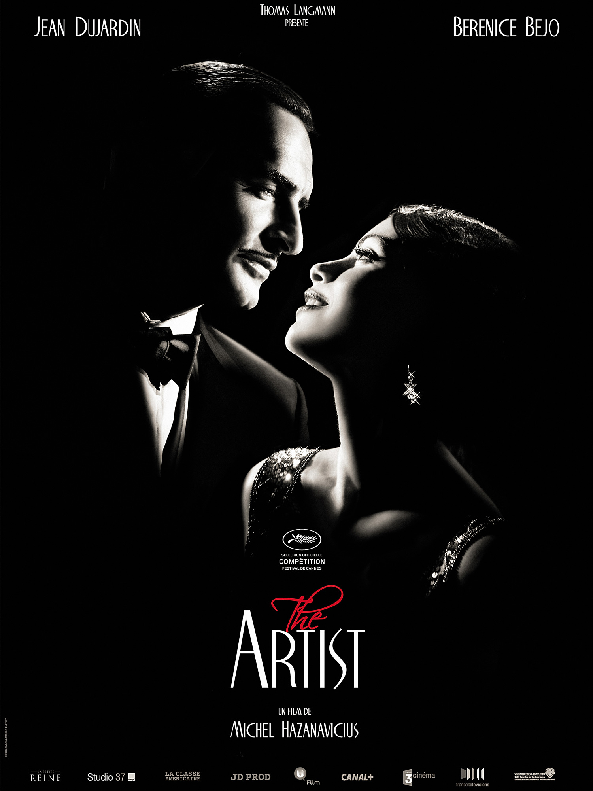
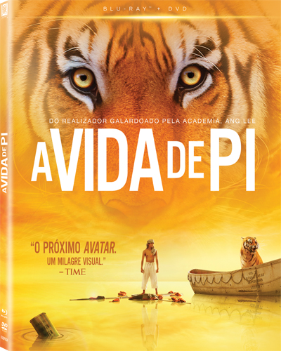
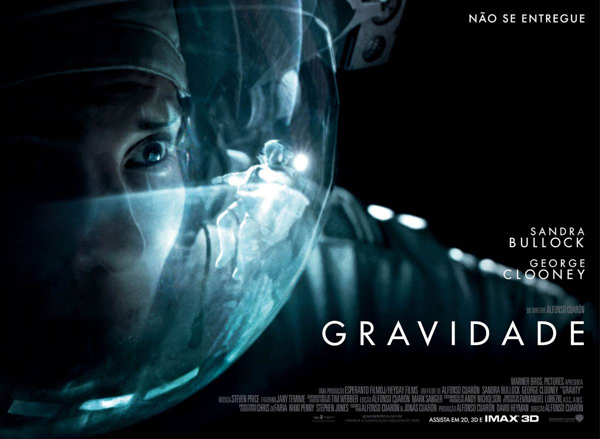
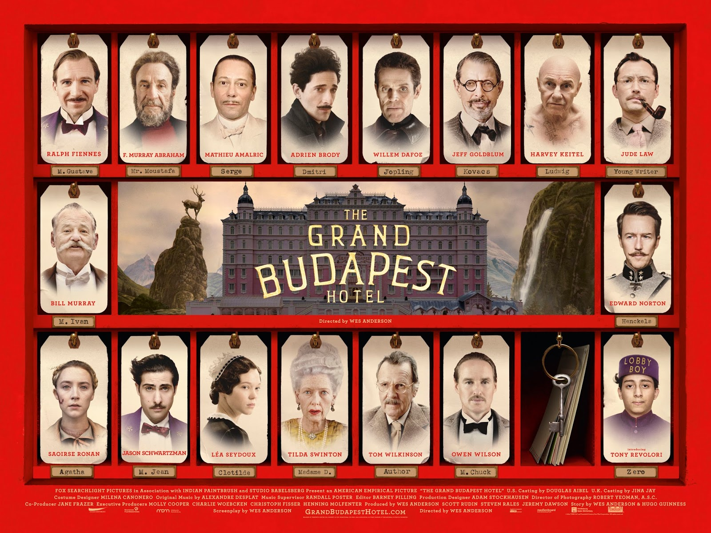
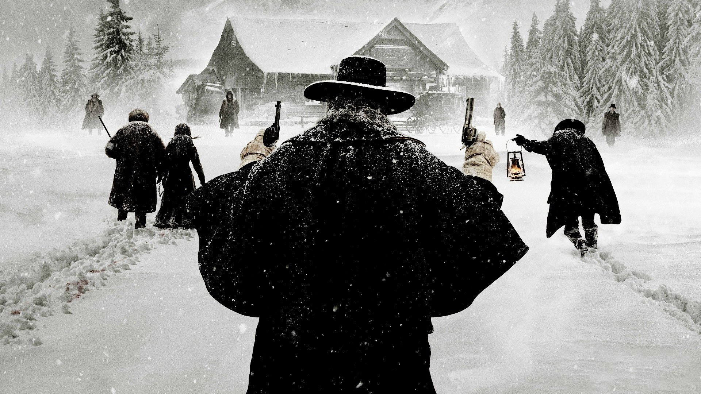
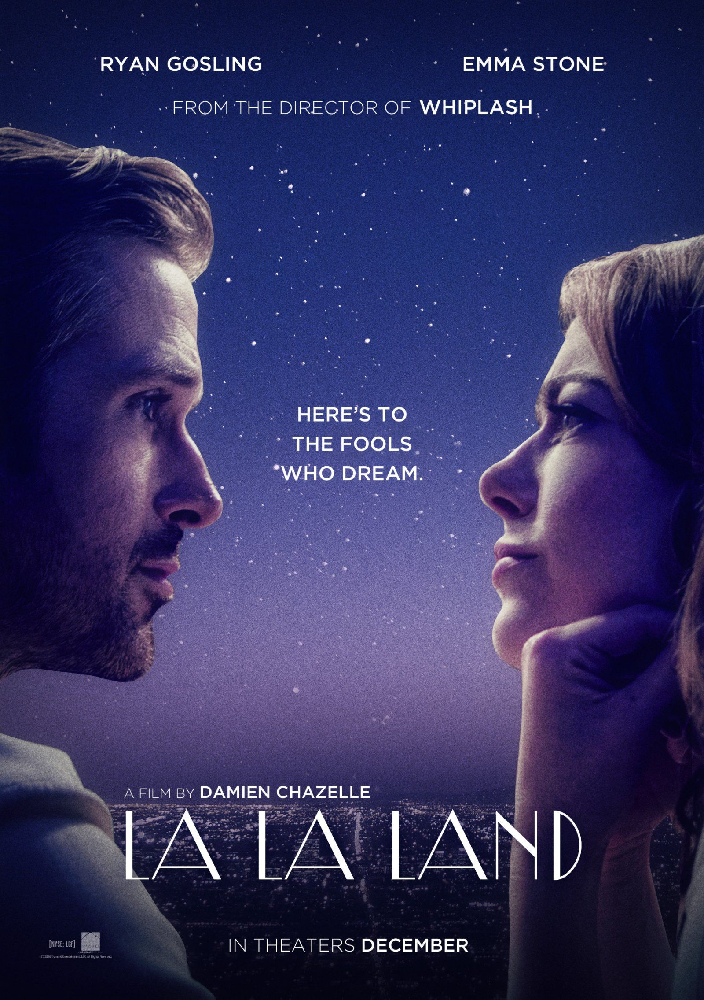

Vencedor 2011
A Rede Social
A Rede Social
Ano: 2010
País de origem: Estados Unidos
Direção: David Fincher
Elenco: Jesse Eisenberg, Andrew Garfield, Justin Timberlake
Gênero: Drama
Música: Trent Reznor, Atticus Ross
Classificação: 14 anos
Duração: 121 min

Vencedor 2012
O Artista
O Artista

Ano: 2011
País de origem: França
Direção: Michel Hazanavicius
Elenco: Jean Dujardin, Bérénice Bejo
Gênero: Comédia
Música: Ludovic Bource
Classificação: 12 anos
Duração: 100min
Vencedor 2013
As Aventuras de Pi
As Aventuras de Pi

Ano: 2012
País de origem: Estados Unidos
Direção: Ang Lee
Elenco: Suraj Sharma, Irrfan Khan, Adil Hussain
Gênero: Aventura
Música: Mychael Danna
Classificação: 10 anos
Duração: 127 min
Vencedor 2014
Gravidade
Gravidade

Ano: 2013
País de origem: Estados Unidos, Reino Unido
Direção: Alfonso Cuarón
Elenco: Sandra Bullock, George Clooney, Ed Harris
Gênero: Drama
Música: Steven Price
Classificação: 12 anos
Duração: 91 min
Vencedor 2015
O Grande Hotel
Budapest
Budapest
O Grande Hotel Budapest

Ano: 2014
País de origem: Alemanha, Estados Unidos
Direção: Wes Anderson
Elenco:Ralph Fiennes, Tilda Swinton, Bill Murray
Gênero: Comédia
Música: Alexandre Desplat
Classificação: 14 anos
Duração: 100 min
Vencedor 2016
Os Oito Odiados
Os Oito Odiados

Ano: 2015
País de origem: Estados Unidos
Direção: Quentin Tarantino
Elenco: Samuel L. Jackson, Kurt Russel, Jennifer Jason Leigh
Gênero: : Faroeste
Música:Ennio Morricone
Classificação:18 anos
Duração: 167 min
Vencedor 2017
La La Land
La La Land

Ano: 2016
País de origem: Estados Unidos
Direção: Damien Chazelle
Elenco: Ryan Gosling, Emma Stone, John Legend
Gênero: Musical
Música: Justin Hurwitz
Classificação: 12 anos
Duração: 128 min
Vencedor 2018
A Forma da Água
A Forma da Água
Ano: 2017
País de origem: Estados Unidos
Direção: Guillermo del Toro
Elenco: Sally Hawkins, Michael Shannon, Richard Jenkins
Gênero: Fantasia
Música:Alexandre Desplat
Classificação: 16 anos
Duração: 123 min